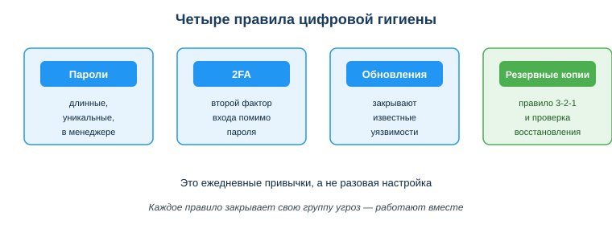

Ты на практике как техник информационных систем. Отработал заявку, настроил доступ к общей папке, сделал скриншот рабочего экрана для отчёта — красиво, видно и терминал с командой, и окно конфигурации. А через день кто-то воспользовался API-ключом сервиса, который был виден в углу того же экрана: набежал счёт за чужие запросы. Один невнимательный шаг — и утекли и секрет от рабочей системы, и почты пользователей, открытые на соседней вкладке.
Так теряют данные чаще всего: не из-за «хакеров в капюшонах», а из-за мелких бытовых ошибок на рабочем месте. Для техника ИС защита — это не паранойя, а набор простых ежедневных привычек, которыми он держит в порядке не только свой ноутбук, но и всю инфраструктуру, которую обслуживает. Их и разбираем.
Цена ошибки растёт: один утёкший пароль или ключ открывает доступ ко всему — почте, деньгам, рабочим системам. Привычки цифровой гигиены защищают тебя каждый день и почти не отнимают времени, если настроены один раз.
Связь с профессией: техник ИС отвечает не только за свои данные, но и за код, инфраструктуру и данные пользователей, которых он обслуживает. Утёкший в репозиторий ключ, незакрытая уязвимость на сервере, слишком широкие права доступа у обычного пользователя или непроверенная резервная копия — это уже не личная неприятность, а инцидент, за который отвечает вся служба поддержки. Техник ИС поддерживает цифровую гигиену не только свою, но и всей организации: парольная политика, обновления и патчи на рабочих местах и серверах, разграничение прав, регулярные бэкапы. Это часть профессиональной культуры.
Посмотри на схему трёх свойств защиты выше. Ответь на вопросы:
Проще: безопасность — это не один «волшебный» антивирус, а ежедневные мелкие действия, как мытьё рук. Все вместе они закрывают три свойства защиты: конфиденциальность, целостность и доступность.
dom-kniga-veter-2026 надёжнее коротких P@ss1.
Персональные данные (ФИО, ИИН, телефон, фото) защищены Законом РК «О персональных данных и их защите». Правила: не публиковать чужие данные без согласия; следить за цифровым следом (данными о тебе в сети); для разработки и тестирования использовать тестовые/обезличенные данные, а не реальные данные пользователей; это же правило действует, когда выгружаешь данные в лог, прикладываешь их к тикету или передаёшь в поддержку.
Техник ИС на практике приложил к отчёту скриншот рабочего экрана, где видны токен API интеграции и почты пользователей из открытой заявки. Это утечка: токен — секрет от рабочей системы (конфиденциальность), почты — персональные данные пользователей. Следующий шаг: перед публикацией закрывать чувствительные данные и не коммитить секреты — выносить их в .env и добавлять файл в .gitignore, а на сервере хранить в переменных окружения.
.env (а на рабочем сервере — в переменных окружения или хранилище секретов), добавить .env в .gitignore, а уже утёкший ключ немедленно сменить (отозвать старый).
Ответь письменно:
Qw1!, dom-kniga-veter-2026, 123456 и сформулируй правило надёжного пароля.dom-kniga-veter-2026: длинная фраза. Правило — длина важнее символьной сложности, плюс уникальность пароля для каждого сервиса».
Цифровую гигиену нельзя выучить — её надо настроить руками один раз. Сделай это на своём аккаунте и устройстве. Понадобится 20–30 минут.
Шаг 1. Включи 2FA на своём аккаунте. Возьми важный аккаунт (почта, GitHub, соцсеть): Настройки → Безопасность → Двухфакторная аутентификация. Выбери приложение-аутентификатор (TOTP: Google Authenticator, Authy и т.п.) — оно надёжнее SMS. Обязательно сохрани резервные коды в надёжном месте (не в переписке и не в заметках телефона). После включения статус должен показать «2FA включена».
Шаг 2. Настрой менеджер паролей. Установи менеджер паролей (встроенный в браузер/ОС или отдельный — KeePass, Bitwarden). Задай надёжный мастер-пароль длинной фразой (например sosna-reka-kod-2026). Добавь 2–3 своих аккаунта, а для одного из них сгенерируй новый уникальный пароль прямо в менеджере и сохрани его. Больше не держи пароли в заметках или в браузере на чужом ПК.
Шаг 3. Настрой автоблокировку экрана. Чтобы оставленный компьютер не стал открытой дверью:
Шаг 4. Сделай проверяемую резервную копию папки. Выбери важную папку (учебные проекты, документы). Скопируй её на второй носитель (флешка/внешний диск) или в облако — это уже шаг к правилу 3-2-1. Затем проверь копию: открой один-два файла именно из копии (на другом устройстве или из облака) и убедись, что они читаются. Копия без проверки восстановления — не копия.
.env и переменных окружения, не в коде и не в скриншотах.Источник: ГОСО ТиПО (приказ МП РК № 348); Закон РК «О персональных данных и их защите»; DigComp 2.2 (область «Безопасность»); материалы по цифровой гигиене.
Разработал: преподаватель ИКТ, магистр управления и информационной безопасности Калиаскаров Д.А.
Материал одобрен к использованию в обучении решением Педагогического совета ТОО «Колледж Хекслет Казахстан».